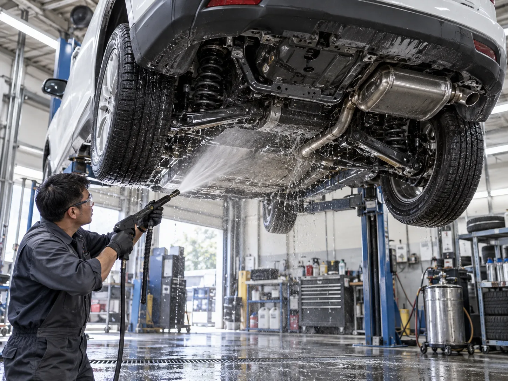
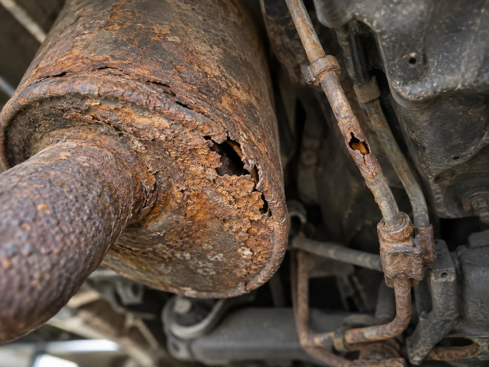
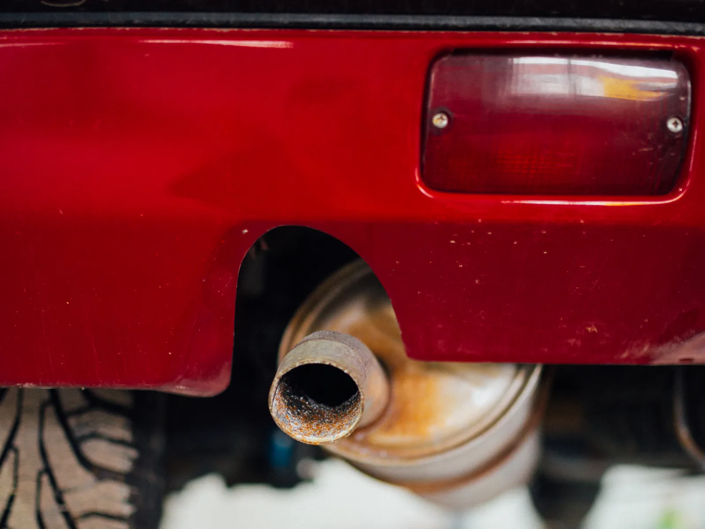
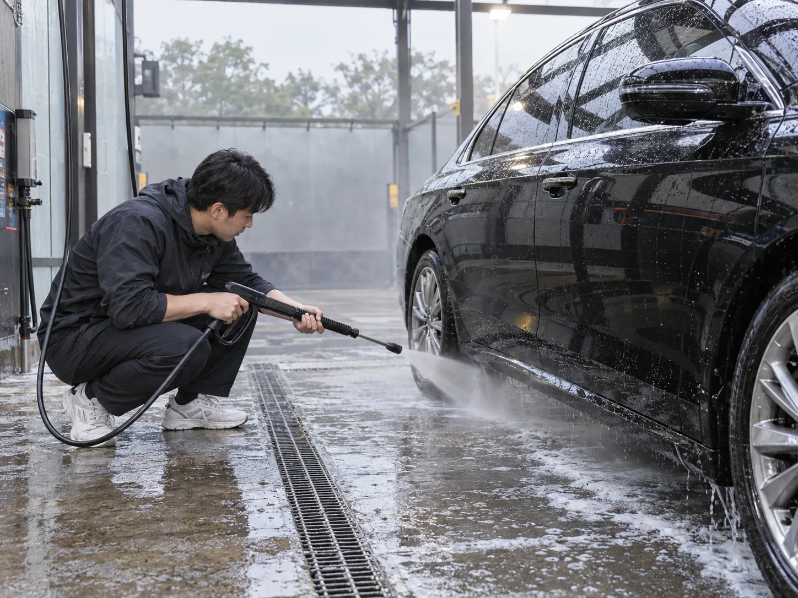

▲ 리프트로 들어올린 차량 하부를 고압수로 세척하는 모습. 여름철 쌓인 염분과 모래는 하부 깊숙한 곳에 남아 있어 일반 세차로는 잘 씻기지 않는다
"파도 소리도 좋았고 백사장도 예뻤는데, 세차는 깜빡했다." 여름 휴가철 바닷가나 계곡을 다녀온 운전자라면 한 번쯤 겪는 일이다. 겉으로 보이는 차체는 세차장에서 몇 번 닦아냈어도, 눈에 잘 띄지 않는 차량 하부는 그대로 방치되는 경우가 많다. 문제는 바로 거기에 있다. 염분 섞인 물보라와 모래, 젖은 유기물이 서스펜션과 배기관 틈새에 스며들어 굳으면, 일반 세차로는 좀처럼 씻겨나가지 않는다. 여름이 끝나고 가을로 접어드는 지금이 하부에 남은 흔적을 점검할 마지막 타이밍인 이유다.
1. 여름 바다·계곡이 남기고 간 것들
▲ 해변 도로를 달리면 파도와 물보라가 차량 하부까지 직접 튄다. 이때 묻은 염분은 겉으로 잘 드러나지 않는다
해수욕장 주차장이나 해안도로를 달리다 보면 파도가 만든 물보라, 젖은 백사장의 모래가 자연스럽게 차량 하부로 튄다. 계곡 역시 마찬가지다. 비포장 진입로나 물웅덩이를 지나면서 젖은 흙과 낙엽 부스러기, 유기물이 서스펜션 암·머플러·언더커버 틈새에 끼어든다. 바닷물에는 염화나트륨을 비롯한 염분이 다량 녹아 있는데, 이 염분은 물이 마른 뒤에도 결정 형태로 금속 표면에 남는다. 겉으로 보면 흙먼지가 살짝 앉은 정도로만 보여 대수롭지 않게 넘기기 쉽지만, 이 잔여물이 가을철 아침저녁 일교차로 생기는 이슬·습기와 계속 접촉하면서 서서히 문제를 키운다.
2. 염분이 쇠를 갉아먹는 원리 — 전해질과 산화 반응
염분이 부식을 앞당기는 이유는 단순히 '짠 물질이 쇠에 묻어서'가 아니다. 화학적으로 보면, 염분은 물에 녹으면서 강력한 전해질로 작용한다. 전해질은 이온을 쉽게 이동시키는 매개체 역할을 하는데, 이 과정에서 철 표면의 전자 이동이 촉진되며 산화 반응, 즉 녹이 스는 속도가 눈에 띄게 빨라진다. 평범한 빗물이나 수돗물에 젖었을 때보다 염분이 섞인 물기에 노출됐을 때 부식이 훨씬 빠르게 진행되는 것도 이 때문이다. 여기에 여름철 특유의 높은 습도와 낮과 밤의 일교차로 생기는 결로까지 더해지면, 염분이 마르고 젖기를 반복하면서 부식을 촉진하는 촉매 역할을 계속 이어간다. 실제로 업계에서는 차량 부식의 대표 원인으로 여름철 높은 습도, 휴가철 바닷바람에 실려온 염분, 겨울철 제설용 염화칼슘을 나란히 꼽는다. 특히 제설제로 쓰이는 염화칼슘은 자기 무게의 최대 14배에 달하는 수분을 빨아들이는 강한 흡습성 물질이어서, 습도나 기온이 낮은 날씨에도 차체 표면을 계속 젖은 상태로 유지시켜 부식을 앞당긴다. 겨울철 제설 구간을 달린 뒤 방치하면 처음에는 하얀 가루 자국 정도로 보이다가, 통상 3개월 안팎이 지나면 붉은 녹으로 번지는 사례가 보고된다. 계절은 다르지만 작동 원리는 같다 — 염분(또는 염화칼슘)+수분=부식 가속이라는 공식이다.
왜 하부가 특히 취약한가
- 세차 시 눈에 잘 안 띄어 관리가 뒷전으로 밀리기 쉽다
- 서스펜션 틈새·프레임 접합부처럼 물기가 잘 마르지 않는 구조가 많다
- 도장(코팅) 두께가 차체 외판보다 얇거나 아예 없는 부품이 많다
3. 방치하면 어디까지 번지나 — 브레이크 라인, 머플러, 서스펜션

▲ 부식이 진행되면 머플러와 브레이크 라인 표면이 갈색으로 삭으면서 결국 구멍이 뚫릴 수 있다 (부식 예시 재현 이미지)
염분 부식을 그대로 방치했을 때 가장 먼저 티가 나는 부위는 대개 머플러(배기관)다. 배기가스의 열기와 수분이 반복적으로 오가는 부품 특성상 원래도 부식에 취약한데, 여기에 염분까지 더해지면 금속이 얇아지다가 구멍이 뚫린다. 머플러에 구멍이 나면 배기가스가 새어 나오면서 평소와 다른 굉음이 나기 시작하는데, 이는 단순 소음 문제를 넘어 배기 시스템 전체 교체로 이어질 수 있다. 더 심각한 쪽은 브레이크 라인이다. 브레이크액을 마스터 실린더에서 캘리퍼로 전달하는 금속관인데, 습도가 높거나 바다 근처처럼 염분 노출이 잦은 환경에서는 부식 속도가 빨라지고, 심할 경우 누유나 파손으로 이어질 수 있다. 브레이크는 안전과 직결되는 장치인 만큼, 라인 부식은 방치할수록 위험 부담이 커지는 항목이다. 이 밖에 서스펜션 암, 하부 프레임, 각종 볼트·너트류도 표면에 녹이 슬기 시작하면 점차 강성이 약해지고, 장기적으로는 주요 부품 교체 비용으로 돌아온다.
| 부위 | 방치 시 나타나는 문제 |
|---|---|
| 머플러(배기관) | 표면 부식이 진행되며 얇아지다가 구멍 발생 → 배기 굉음, 배기 시스템 교체 |
| 브레이크 라인 | 금속관 부식으로 누유·파손 위험 → 제동력 저하로 직결되는 안전 문제 |
| 서스펜션·하부 프레임 | 표면 녹이 점차 부품 강성을 약화시켜 장기적으로 교체·수리 비용 증가 |
| 각종 볼트·너트 | 고착·부식으로 향후 정비 시 탈거가 어려워지고 추가 부품 손상 유발 |

▲ 실제로 부식이 진행된 배기관 끝부분. 반복적인 열기와 수분 노출이 겹치면 금속 표면이 이렇게 붉게 삭아 들어간다 (사진=Wikimedia Commons, Nenad Stojković, CC BY 2.0)
4. 하부세차, 방법별 비용과 주기

▲ 셀프세차장에서는 하부 전용 고압수 노즐이나 건을 이용해 직접 하부세차를 진행할 수 있다
다행히 하부세차 자체는 비용 부담이 크지 않다. 문제는 '깜빡하고 안 한다'는 것뿐이다. 대표적인 방법별 비용과 특징은 다음과 같다.
| 방법 | 비용(대략) | 특징 |
|---|---|---|
| 셀프세차장 하부 옵션 | 기본 세차비에 +2천~4천 원 추가, 합산 5천~9천 원대 | 바닥에 매설된 고압 노즐 위에 주차하거나, 하부 전용 건으로 직접 분사 |
| 주유소·매장 자동세차 하부 코스 | 자동세차 요금에 포함되거나 소폭 추가 | 세차기 통과 중 자동으로 하부에 물을 뿌려주는 방식, 꼼꼼함은 셀프 대비 다소 낮음 |
| 정비소·전문점 방청(언더코팅) | 3만~10만 원 선(차종·범위에 따라 차이) | 세척 후 방청제를 도포해 코팅막을 씌우는 방식, 신차나 노후 차량에 특히 권장 |
※ 가격은 지역·업체별로 차이가 크며, 위 수치는 참고용 대략치다.
주기는 상황에 따라 다르게 접근하는 것이 합리적이다. 습도가 높은 여름철에는 1~2주에 한 번꼴로 하부세차를 해주는 것이 바람직하고, 겨울철에는 한 달에 1~2회 정도면 충분하다는 것이 세차 업계의 일반적인 권장 기준이다. 다만 장마철이나 겨울철 제설제 살포 시기처럼 노면 환경이 특히 나쁠 때는 이보다 더 자주, 2주 간격 안팎으로 좁혀 관리하는 것이 안전하다. 여기에 더해 이번 글의 핵심은, 바닷가나 계곡을 다녀온 직후에는 이런 정기 주기와 별개로 되도록 빨리 하부세차를 해줘야 한다는 점이다. 휴가지에서 돌아온 그 주말, 아니면 적어도 한 달 안에는 하부에 남은 염분과 이물질을 씻어내는 것이 좋다.
비용 면에서는 셀프세차장 하부 옵션(5천~9천 원대)과 정비소 전문 방청 코팅(3만~10만 원)의 중간 지점도 있다. 엔진오일 교체 등으로 차량을 리프트에 올린 김에 방청유(러스트프루프 오일)나 양털유 계열 스프레이를 프레임·서스펜션·머플러 주변에 직접 도포하는 셀프 방식인데, 제품 가격은 1만 원대 안팎으로 저렴하면서도 1~2년 정도 보호막 효과가 유지된다는 게 장점으로 꼽힌다. 물론 전문점의 정밀 코팅만큼 꼼꼼하지는 않지만, 수백만 원대로 불어날 수 있는 부식 관련 수리비를 사전에 줄이는 저비용 선택지로 참고할 만하다.
킥스사이다 하부 관리법 가이드에서 확인 가능5. 가을철 체크리스트 — 지금 바로 확인할 것
여름 나들이가 많았던 해일수록 가을철 하부 점검의 중요성은 커진다. 특별한 장비 없이도 아래 사항 정도는 스스로 점검해볼 수 있다.
가을맞이 하부 점검 체크리스트
- 여름철 바닷가·계곡을 다녀온 적이 있다면, 아직 하부세차를 안 했는지부터 확인한다
- 차량 아래를 스마트폰 플래시로 비춰 흰색 결정(염분 자국)이나 붉은 녹 흔적이 있는지 살펴본다
- 배기음이 평소보다 커지거나 쇳소리가 섞여 들린다면 머플러 부식을 의심하고 정비소를 찾는다
- 제동 시 이질감이나 브레이크액 경고등이 뜬다면 즉시 점검받는다 — 브레이크 라인 부식은 안전과 직결된다
- 노후 차량이거나 바닷가 인근에 거주한다면 정기 방청(언더코팅) 시공을 고려한다
정리
체크포인트
- 여름철 해수욕장·계곡 방문으로 차량 하부에 묻은 염분·모래는 겉보기와 달리 가을 내내 부식을 진행시킨다
- 염분은 습기와 만나 전해질로 작용해 금속 산화(부식) 반응을 촉진하는 촉매 역할을 한다
- 방치 시 머플러 천공, 브레이크 라인 누유, 서스펜션 강성 저하 등 안전과 직결되는 문제로 번질 수 있다
- 하부세차는 셀프세차장 기준 5천~9천 원대로 부담이 크지 않으며, 여름 1~2주·겨울 월 1~2회를 기본으로 하되 바닷가·계곡 방문 직후에는 되도록 빨리 해주는 것이 좋다
- 노후 차량이나 해안 지역 거주자라면 3만~10만 원대 전문 방청(언더코팅) 시공도 고려할 만하다